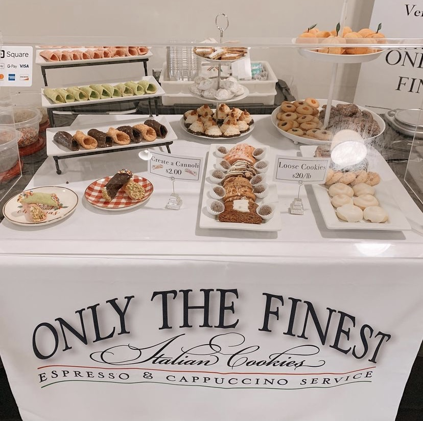

Only The Finest Italian Cookies is a female-run, family-owned business, but it is so much more. Opening in 2004 with a store in Cranston, Rhode Island, Ann Louise Ronci had a mission to bring the only the finest cookies to New England. She ran her store for three years before she decided to close down and spend more time with her beloved grandchildren. Her store closure did not slow her down! Ann Louise saw an opportunity to bring her cookies to you, and celebrate your most important life moments. From weddings to baby showers, Ann Louise was there with her beautiful cookie display. 2011 brought a new business venture (and lots of energy), an espresso bar! Pair your favorite biscotti with a piping hot cappuccino.
Ann Louise was a graceful and loving woman. She loved her business but she loved her family more. In June of 2017 she was diagnosed with stage four brain cancer. The weekend that she was admitted to the hospital she had a wedding. Knowing that Ann Louise would never want to let a bride down, our family grabbed the mixing bowls and the trays and took over for the night. After those sad and stressful days, her daughter, Maria decided to take over Only The Finest Italian Cookies for good. Here is what Maria has to say,
“If a person could solve the world's problems with a tray of cookies, it was my mom. Ann Louise Ronci infused her delicious desserts with love and caring. To her, food was not about just eating, but about family, togetherness, and joy. She truly believed that nothing radiated warmth and closeness more than a homemade cookie. Hearing "these taste just like the ones my mother used to make!" was the ultimate compliment. Mom appreciated her Italian heritage and traditions, one of which is the Italian cookie tray, shared at baptisms, birthdays, weddings, anniversaries, and funerals. She joyfully created "Only the Finest Italian Cookies" in Rhode Island-- and what a fitting label it was.
She prided herself on using only the highest quality of ingredients and baking her Italian cookies and biscotti in small batches to ensure they were always fresh. Her cookies could never be duplicated in a factory or even your average bakery. Espresso and cappuccino were added to the company's repertoire in 2011. She became the only espresso bar vendor in southern New England.
I took over the business in 2017 to continue offering our customers dessert options like no other. We could not think of a better tribute to mom than to continue the business she was so very proud of. Mom settled for nothing but the best and insisted that we follow suit. Only the Finest promises superior products and services.
Our team is ready to customize our offerings to best serve your needs. It is our wish that by choosing Only the Finest we can be an important part of your special event.”
ONLYTHEFINESTITALIANCOOKIES@GMAIL.COM
401-450-9276